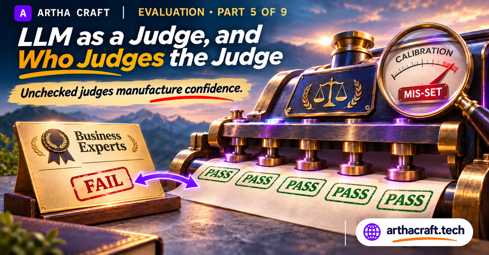

Support
Whether the quote actually backs the conclusion drawn from it.
A model judge is fast, cheap and often useful. It is also a model, with known habits. Treat it as an instrument: strengthen the contract it judges against, guard it, and calibrate it against the people who know the business.

In 2023, a group of researchers asked one AI model to judge which of two other models gave better answers. Then they changed one thing, the order in which the two answers were shown, and kept the questions, the answers and the judge the same. That change alone let them make one model "beat" the other on 66 of 80 questions. In the authors' words, the ranking "can be easily hacked." [1]
That same year, another team published the study that made "LLM as a judge" a standard practice. A strong model used as a judge agreed with human preferences more than 80 percent of the time, about the same rate at which humans agree with each other. It also showed position bias, verbosity bias, self-enhancement bias and limited reasoning. [2]
Both findings are true at once. A model judge can be as consistent as a human panel and still be steered by things that have nothing to do with quality. A later study found that models recognise their own writing and score it higher than writing humans rated as equal. [3]
So the judge is neither the problem nor the answer. It is a measuring instrument: useful, fast and cheap, and like any instrument it gives wrong readings until it is calibrated. The rest of this article covers that calibration, meaning what a judge must guard against and who checks the judge. Part 1 listed calibration as one of five things to measure (when a model says it is confident, is it right?), and a judge needs exactly that test.
Part 4 ended at the limit of code, which can prove a quote exists in the source but cannot tell you:
Whether the quote actually backs the conclusion drawn from it.
Whether the answer addresses the question that was asked.
Whether the steps from evidence to conclusion hold.
Whether something that should be there is missing.
All four need judgement. Human judgement is the standard, but it is slow and expensive and does not scale to every response, so a model judge fills the gap, as long as it is held to the same discipline as the system it judges.
A judge can only be as sound as the contract it judges against. If the contract leaves out a data point, the judge will pass every answer that leaves it out too. So before trusting any judge, strengthen the contract.
We do this by having one model check another's work:
It works the way a peer or a manager reviews the work of someone deep in the detail: a fresh reader catches what the person in the weeds missed. What comes out is a prompt with its reasoning made explicit, and an output that misses less.
Three cautions apply. The reviewer's findings are input rather than changes: a second model can invent "missing" points as easily as the first invents facts, so its suggestions go through the same approval as any contract change in Part 3, and the business decides. The loop converges on what two models agree on, which is not necessarily what the business needs. And a different provider is less independent than it looks: in a study of more than 350 models, when two models both got a question wrong, they gave the same wrong answer 60 percent of the time on one test set, even across providers. [4]
A second model's agreement is useful. Your experts' agreement is the standard.
We apply the same principle in our own development work. One company's model writes the code and the unit tests; a model from a different company does the final testing and verifies the output, so no model signs off its own work. The next step is to run the two as one pipeline.
But a second model is still a model. Researchers who built tools for this problem put it plainly: LLM evaluators "simply inherit all the problems of the LLMs they evaluate, requiring further human validation." [5] The final judge of the judge is a person who knows the business.
Checking a judge against human labels is standard advice: measure how often its verdicts match people's before relying on it, use the reasons people give to refine it, and keep re-checking. [6] What our experience adds is where those human labels come from.
In our case they come from the business user in UAT. Once the judge has verified the output, the system goes to user acceptance testing. Testers grade the outputs and record why, and those graded cases feed the evaluation engine, which gives you everything you need to calibrate a judge:
The judge's verdict and the tester's verdict, on the same cases, per criterion.
Look hardest at the cases the judge passed and the tester failed, because those are the ones that would reach a customer.
Only on criteria where agreement meets a level the business sets, like the pass threshold in Part 3. The rest stay with people.
Into the golden set, through the release process, so the judge is re-tested after every change.
Practitioners describe the same pattern: an expert's pass or fail with a written critique becomes "the seed of your evaluation harness." [7] Expect the criteria to move at first, too. People need criteria to grade outputs, but grading outputs is what helps them define the criteria; the Validators researchers call it "criteria drift." [5] Version every change.
Two alternatives can reduce the human load, though neither removes it. A panel of judges, several smaller models from different families voting, beat a single large judge in one study, with less bias from any one model, at over seven times lower cost. [8] Given correlated errors, a panel still needs your graded cases to calibrate against. Trust or escalate has the judge estimate its own confidence and decide only when it is confident; one method guaranteed over 80 percent human agreement while covering almost 80 percent of cases. [9] The paper escalates to a stronger model; we adapted it so that, in a business setting, the escalation goes to a person. For reporting quality at scale, statistical methods can combine a small human-graded set with the judge's verdicts into an honest figure with error bars. [10]
Calibration is never finished, because the judge is a model and models change. Re-run it against the expert-graded cases whenever its prompt or model changes, and on a schedule even when nothing seems to have. A judge that drifts silently is worse than no judge, because it keeps producing confidence.
The judge's verdicts are part of the audit record: which model and prompt version judged, the verdict, the reason, and any human override.
In development, one company's agent builds and another's verifies, so no agent signs off its own work. For agents in production, judge each step, not only the final answer.
The judge drifts too. Recalibrate when its model or prompt changes, and on a schedule when nothing has.
The judge is fast.
The judge is cheap.
The judge is a model.
Calibrate it against the people who know the business, and keep doing it.
Jitander Chauhan